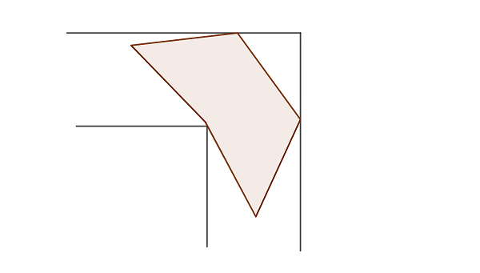
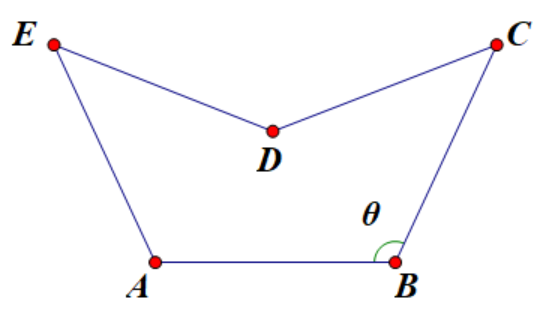

Project Euler 667
Project Euler 667
题目
Moving Pentagon
After buying a Gerver Sofa from the Moving Sofa Company, Jack wants to buy a matching cocktail table from the same company. Most important for him is that the table can be pushed through his L-shaped corridor into the living room without having to be lifted from its table legs.
Unfortunately, the simple square model offered to him is too small for him, so he asks for a bigger model.
He is offered the new pentagonal model illustrated below:

Note, while the shape and size can be ordered individually, due to the production process, all edges of the pentagonal table have to have the same length.
Given optimal form and size, what is the biggest pentagonal cocktail table (in terms of area) that Jack can buy that still fits through his unit wide L-shaped corridor?
Give your answer rounded to \(10\) digits after the decimal point (if Jack had choosen the square model instead the answer would have been \(1.0000000000\)).
解决方案
本题的关键在于两点：五边形的 \(5\) 条边等长，并且形状如题图（一个对称的凹五边形）。以及在转弯过程中，最卡的时刻出现在桌子同时受两条外墙约束时；因此可以把问题化为：对每个旋转角度，把五边形尽量推到外墙（两坐标轴）上，然后检查内拐角是否会落入五边形内部（或与其边界相交）。
下面将把这一思路形式化，并设计可直接求解的数值算法。
可见，走廊关于交换两条走廊方向（\(x\leftrightarrow y\)）是对称的，而“从竖走廊进来”和“从横走廊进来”的情形等价，因此我们希望把最优桌子限制到关于一条轴对称的等边凹五边形（题图所示的模型）。
这一限制需要论证。先给出走廊对称性下的一个标准结论：
命题：设可行形状空间为 \(\mathcal M\)（把五边形在平移、旋转等刚体运动下视为同一个等价类之后得到的形状参数空间），目标函数为 \(F:\mathcal M\to\mathbb R\)，并且对反射变换 \(R\)（交换两条走廊方向，对应平面上 \(x\leftrightarrow y\) 的反射）满足\(F(R(P))=F(P), \forall P\in\mathcal M,\)且可行性条件也在 \(R\) 下保持不变。若 \(P^\ast\) 是一个孤立的全局最优点（即在某邻域内不存在与 \(P^\ast\) 非同一个刚体等价类的最优点），则必有\(R(P^\ast)=P^\ast,\)从而 \(P^\ast\) 在适当放置下具有镜面对称。
证明：由不变性可知若 \(P^\ast\) 最优，则 \(R(P^\ast)\) 也最优且 \(F(R(P^\ast))=F(P^\ast)\)。若 \(R(P^\ast)\neq P^\ast\)，则存在两个不同的最优点，违背孤立假设，因此必须 \(R(P^\ast)=P^\ast\)。证毕。
因此，只要最优解是孤立的，走廊的对称性就会强迫最优形状对称。
在此基础上，下面对称五边形用一个角参数 \(\theta\) 描述，并把边长先固定为 \(1\)（最后再整体缩放）：令底边（与凹点相对的那条边）为\(A=\left(-\dfrac12,0\right),B=\left(\dfrac12,0\right),|AB|=1.\)设在点 \(B\) 处，边 \(BC\) 与 \(BA\) 的夹角为 \(\theta\)，其中为了形成凹点需要\(\dfrac{\pi}{2}<\theta<\dfrac{2\pi}{3}.\)则\(C=\left(\dfrac12-\cos\theta,\sin\theta\right).\)由对称性得\(E=(-C_x,C_y).\)顶点 \(D\) 在对称轴 \(x=0\) 上，并满足 \(|CD|=|DE|=1\)。令 \(C=(x,y)\)，则\(x^2+(y-y_D)^2=1\Rightarrow y_D=y\pm\sqrt{1-x^2}.\)取较小的那个（使 \(D\) 落在 \(CE\) 下方形成凹角）：\(D=(0,y-\sqrt{1-x^2}), x=\dfrac12-\cos\theta, y=\sin\theta.\)至此，\(\theta\) 唯一确定这族五边形。
按顶点顺序 \(A\to B\to C\to D\to E\) 用鞋带公式计算面积。记 \(C=(x,y)\)，并记\(t=\sqrt{1-x^2}.\)则 \(D=(0,y-t)\)。化简可得单位边长五边形面积
\[ S_0 =\frac12(y+2x(y-t)) =\frac{y}{2}+x(y-t). \]
代回 \(x=\dfrac12-\cos\theta,y=\sin\theta\) 即得 \(S_0(\theta)\)。

把走廊放在第一象限，外墙为两坐标轴 \(x=0\)、\(y=0\)，内拐角为 \((w,w)\)（走廊宽度为 \(w\)）。若桌子在某一朝向下被推到外墙（即平移使其最小 \(x\) 与最小 \(y\) 都为 \(0\)），则此时它能放入宽度为 \(w\) 的 L 形走廊，当且仅当桌子不进入禁止区域\(\{(x,y): x>w\land y>w\}.\)
引理1：固定旋转角 \(\varphi\) 与桌子形状。把“所需走廊宽度”定义为：在所有平移方式中，使桌子上点 \(P\) 的 \(\min(x(P),y(P))\) 的最大值尽可能小的那个最小可能值，即\(\displaystyle w_{\text{need}}=\inf_{\tau}\ \sup_{P\in\mathcal{T}} \min\bigl(x_{\tau}(P),y_{\tau}(P)\bigr).\) 其中 \(\tau\) 表示对整张桌子的平移，\(\mathcal{T}\) 表示桌子对应的平面点集，\(x_{\tau}(P),y_{\tau}(P)\) 表示点 \(P\) 在平移 \(\tau\) 后的坐标。
那么可以取到该下确界的平移，使得桌子在该朝向下同时贴住两条外墙，即满足\(\displaystyle\min_{P\in\mathcal{T}} x_{\tau}(P)=0, \min_{P\in\mathcal{T}} y_{\tau}(P)=0.\)也就是说，在固定朝向下的最优放置一定可以令桌子同时接触两条外墙。
证明：对任意平移后的桌子，若 \(\displaystyle\min_{P\in\mathcal{T}} x_{\tau}(P)=a>0\)，则整体向左再平移 \(a\)，使所有点的 \(x\) 同时减去 \(a\) 而 \(y\) 不变。于是对每个点 \(P\) 都有 \(\min(x_{\tau}(P)-a,y_{\tau}(P))\le \min(x_{\tau}(P),y_{\tau}(P))\)，从而 \(\displaystyle\sup_{P\in\mathcal{T}}\min(\cdot,\cdot)\) 不增。类似地可把 \(\min y\) 也推到 \(0\)。由此得证。
因此我们只需考虑已推到外墙的版本。定义函数\(g(x,y)=\min(x,y),\)那么禁止区域正是 \(g(x,y)>w\)。因此对于已推到外墙的形状，所需的最小宽度就是\(\displaystyle w(\varphi)=\max_{P\in \mathcal{P}_{\varphi}} g(P),\) 其中 \(\mathcal{P}_{\varphi}\) 表示：把桌子按角度 \(\varphi\) 旋转后，再做某个平移使其同时贴住两条外墙（满足上面的两个最小值为 \(0\)）所得到的闭集（包含内部与边界）。
下面说明最大值必发生在边界上：
引理2：对任意非空有界闭集合 \(\mathcal{K}\subset \mathbb R^2\)，若 \(g(x,y)=\min(x,y)\)，则\(\displaystyle\max_{(x,y)\in\mathcal K} g(x,y)=\max_{(x,y)\in\partial\mathcal K} g(x,y).\)
证明：\(g\) 连续，最大值在 \(\mathcal K\) 处可取。设最大点为 \(Q\)。若 \(Q\) 位于内部，则存在 \(\epsilon>0\) 使得 \(Q+\delta(1,1)\in\mathcal K\) 对所有 \(0<\delta<\epsilon\) 成立，其中\(\delta\) 是一个很小的正数步长，而\(g(Q+\delta(1,1))=g(Q)+\delta>g(Q),\)与 \(Q\) 为最大点矛盾。因此最大点只能在边界上。证明完成。
因此\(\displaystyle w(\varphi)=\max_{P\in \partial\mathcal{P}_\varphi} g(P).\)
接下来要把这个“最大值”算出来：
引理 3：在一条线段上，\(g(x,y)=\min(x,y)\) 的最大值只能发生在两端点或与直线 \(x=y\) 的交点处（若交点在线段上）。
证明：在 \(x\le y\) 的区域内，\(g(x,y)=x\) 为线性函数；在 \(x\ge y\) 的区域内，\(g(x,y)=y\) 亦为线性函数。线段与直线 \(x=y\) 至多交一次，从而线段被分成至多两段在线性函数上的限制，最大值必在每段端点取得，即原线段端点或交点。证毕。
因此对每个朝向 \(\varphi\)，只要检查\(5\) 个顶点的 \(\min(x_i,y_i)\)和每条边若跨过 \(x=y\)，计算交点 \((u,u)\)，取 \(u\)，即可得到 \(w(\varphi)\)。
从竖走廊转到横走廊，桌子需要经历从某一初始朝向到最终朝向的连续旋转。由于整体旋转 \(90^\circ\) 后问题对称，且上述 \(w(\varphi)\) 以 \(\dfrac{\pi}{2}\) 为周期考虑即可，因此需要的走廊宽度是\(\displaystyle W(\theta)=\max_{\varphi\in[0,\pi/2]} w(\varphi;\theta).\)
当走廊宽度固定为 \(1\) 时，如果单位边长五边形需要宽度 \(W(\theta)\) 才能通过，那么把整个五边形按比例缩放 \(s=\dfrac{1}{W(\theta)}\) 就恰好能通过单位宽走廊；面积按平方缩放，因此该形状下可买到的最大桌面面积为\(S(\theta)=\dfrac{S_0(\theta)}{W(\theta)^2}.\)目标即为\(\displaystyle\max_{\theta\in(\pi/2,,2\pi/3)} S(\theta).\)
不过直接按定义去算\(\displaystyle W(\theta)=\max_{\varphi} w(\varphi;\theta)\)会引入对 \(\varphi\) 的最大化，再外层对 \(\theta\) 最大化，形成双层搜索。我们证明在最优解处，最大值来自一个临界构型，可用相切条件刻画，从而把搜索变成解方程。
引理4；设某形状在单位宽走廊中可通过，且在全过程中都严格满足 \(w(\varphi)<1\)（即存在裕量）。则该形状可被整体放大一个比例 \(1+\epsilon\) 仍可通过，从而原形状不可能最优。
证明：若对所有朝向都有 \(w(\varphi)\le 1-\delta\)，则缩放 \(1+\epsilon\) 后所需宽度变为 \((1+\epsilon)w(\varphi)\le (1+\epsilon)(1-\delta)\)。取足够小的 \(\epsilon\) 使其仍小于 \(1\)，即仍可通过，而面积变大。证明完成。
因此最优解必满足：存在某个关键朝向 \(\varphi^\ast\) 使得\(w(\varphi^\ast)=1,\)并且在该关键构型中，内拐角与桌子边界发生接触（否则仍有缩放裕量）。
在一个固定的接触模式（即究竟是哪条边/哪个点在给出 \(w(\varphi)\)不变）内，\(w(\varphi)\) 是一个光滑函数。若全局最大值在该模式的内部点 \(\varphi^\ast\) 取得，则必有驻点条件\(\dfrac{d}{d\varphi} w(\varphi^\ast)=0.\)在几何上，这正对应内拐角落在某条移动边的包络上，即该边在运动参数下扫出的直线族与包络曲线相切。
在本题的最优解中，关键接触模式可选取为：桌子贴着两条外墙运动时，内拐角恰好与某条斜边（对称的两条之一）相切。此时相切条件给出一个额外方程，用来消去对 \(\varphi\) 的搜索。
为了把相切条件写得简洁，改用对称等边凹五边形的两参数表示：\(l\)表示边长；\(h\)表示凹点到上方那条对称边的垂直距离（在标准放置下可定义为某对称轴上的几何量）。
在该参数下，五边形可拆分为一个梯形与两个全等三角形，得到面积为\(A(h,l)=\dfrac{hl}{2}+\sqrt{h^2+\dfrac{l^2}{4}}\sqrt{\dfrac{15l^2}{16}-\dfrac{h^2}{4}}.\)整体高度为\(H(h,l)=\dfrac{h}{2}+\dfrac{l\sqrt{\frac{15l^2}{16}-\frac{h^2}{4}}}{2\sqrt{h^2+\frac{l^2}{4}}}.\)
由引理 4，最优时高度也会卡到走廊宽度，因此\(H(h,l)=1.\)
在关键阶段（桌子贴着两条外墙并转过拐角的阶段），把走廊内拐角相对于桌子坐标系的位置写成参数 \(t\) 的轨迹 \[ x(l,t)=\frac{l}{2}\cos t-\cos\frac{t}{2}+\sin\frac{t}{2}, y(l,t)=\frac{l}{2}\sin t-\sin\frac{t}{2}-\cos\frac{t}{2}. \]
轨迹在参数 \(t\) 处的切线斜率为 \[ m(l,t)=\frac{\partial y/\partial t}{\partial x/\partial t}. \]
对称性意味着关键接触由 \(t\) 与 \(\pi-t\) 两处的对称切线共同决定：取两条切线的交点，其纵坐标给出 \(-h\)，即\(h=h(l,t).\)最后，相切的那条桌边必须与该切线一致，并且其端点间距离恰为 \(l\)，可化为一个只含 \(l,t\) 的方程\(F(l,t)=0.\)
于是：对每个 \(l\)，由\(F(l,t)=0\)解出对应的 \(t\)，再得到 \(h=h(l,t)\)，进而得到高度 \(H(h,l)\)。最优尺寸由高度卡死给出\(H(h(l,t),l)=1,\)这变成对 \(l\) 的一维求根（单调性来自几何上“放大边长会放大高度”，并在数值上表现为严格单调）。
这样就把原来的双层最大化替换成：内层对给定 \(l\) 解一元方程 \(F(l,t)=0\) 得 \(t\)；外层对 \(l\) 二分使 \(H=1\)；最终面积输出 \(A(h,l)\)。
在该流程中，搜索只剩稳定的一维二分，且每步只需要解一个一元方程，不再需要对角度网格扫描找全局最大。
上述方程组给出一个离散解（在合理区间内唯一），因此最优点在形状空间中是孤立的。由命题可知，走廊对称性强迫最优形状对称。
代码
1 | import math |